lorenz_partial_additive_mse_uniform_p30_obsnoise001__ndelays_sweepProject: Lorenz_INDpartial_NDsweep_D1_NormTrue__JacobianODE
Launched: 2026-04-19T22:25:57Z
Completed: 2026-04-20T05:15:19Z
Outcome: complete_clean
Git: latent-JacobianODE @ 477d6a0
Expected runs: 10
lorenz_partial_additive_mse_uniform_p30_obsnoise001__ndelays_sweepDescription
Lorenz partial additive coupling, uniform reconstruction loss, obs_noise=0.01, prediction_steps=30, loop_closure_weight=0. Sweeps delay_embedding_params.n_delays over [5, 10, 15, 20, 25, 30, 35, 40, 45, 50]. n_target_dims fixed at 3; encoder.n_input is auto-resolved from n_delays × |observed_indices| at Hydra runtime.
Hypothesis
Holding LC=0 pins the reconstruction + forward-rollout objective at its baseline and isolates how much the chart-learning problem (and thus Lyapunov recovery) depends on the delay-embedding length alone. Embedding too short → attractor not unfolded cleanly (Takens dimensionality bound is 2×3+1=7 for generic Lorenz); embedding too long → too much redundant dim structure for the encoder to carve into 3 dyn + (N-3) null. Expect a sweet spot somewhere in the teens-to-twenties on clean data; at obs_noise=0.01 the window is likely not yet pushed toward the long end (contrast with the obsnoise005 variant).
Success criteria
Swept axes (2): data.train_test_params.delay_embedding_params.n_delays, model.encoder.n_input
Chosen run (by best_traj_loss): htrnbil4 — traj_loss=0.00044, MASE=0.5726, R²=0.9988, LC loss=2.896, epoch=119.0
Swept-axis values at chosen run: data.train_test_params.delay_embedding_params.n_delays=45 · model.encoder.n_input=45
Runs analyzed: 10 (expected 10)
| run_idx | run_id | data.train_test_params.delay_embedding_params.n_delays |
model.encoder.n_input |
best_traj_loss | best_MASE | R² | LC loss | epoch |
|---|---|---|---|---|---|---|---|---|
| 8 | htrnbil4 |
45 | 45 | 0.00044 | 0.5726 | 0.9988 | 2.896 | 119.0 |
| 7 | mt362mfq |
40 | 40 | 0.00068 | 0.6000 | 0.9982 | 1.102 | 111.0 |
| 6 | r8v6vao1 |
35 | 35 | 0.00077 | 0.6291 | 0.9979 | 1.660 | 181.0 |
| 4 | b2mixsm8 |
25 | 25 | 0.00151 | 0.7031 | 0.9959 | 0.412 | 139.0 |
| 3 | 0zkh7nui |
20 | 20 | 0.00243 | 0.8606 | 0.9934 | 0.228 | 49.0 |
| 2 | zvldwae9 |
15 | 15 | 0.00437 | 0.9654 | 0.9887 | 0.115 | 133.0 |
| 1 | yss0ka8u |
10 | 10 | 0.00750 | 1.4351 | 0.9800 | 0.035 | 60.0 |
| 9 | wy6ex26e |
50 | 50 | 0.01409 | 1.9834 | 0.9631 | 5.335 | 21.0 |
| 0 | ahkte45j |
5 | 5 | 0.01423 | 2.3107 | 0.9623 | 0.052 | 71.0 |
| 5 | 2eyziq6e |
30 | 30 | 1.09857 | 34.4996 | -1.9571 | 0.231 | — |
| Criterion | Verdict | Note |
|---|---|---|
| Clear minimum in best val traj_loss as a function of n_delays (not monotonic) | Unknown | |
| λ_min accuracy non-monotonic in n_delays too, ideally tracking the val loss minimum | Unknown | |
| All runs converge (no training divergence regardless of n_delays) | Unknown |
Automated verdicts use simple numeric-threshold parsing and may mis-classify qualitative criteria. The Discussion section below takes precedence.
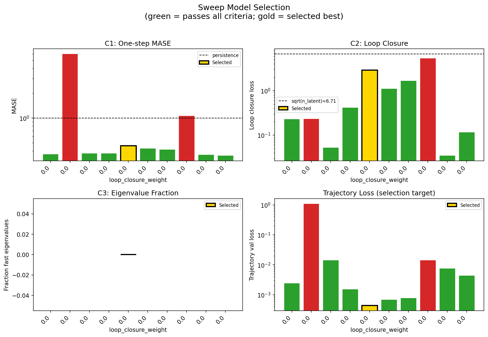
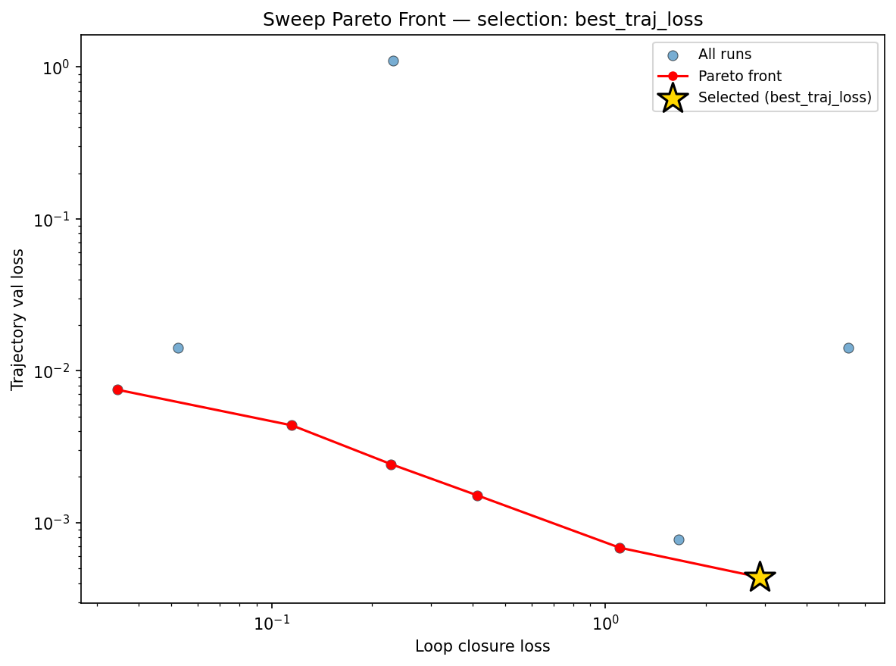
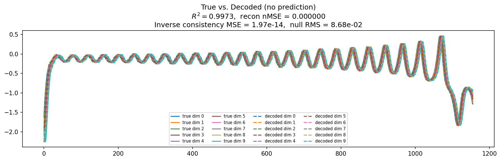
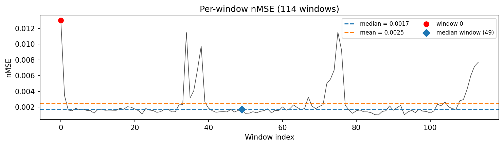
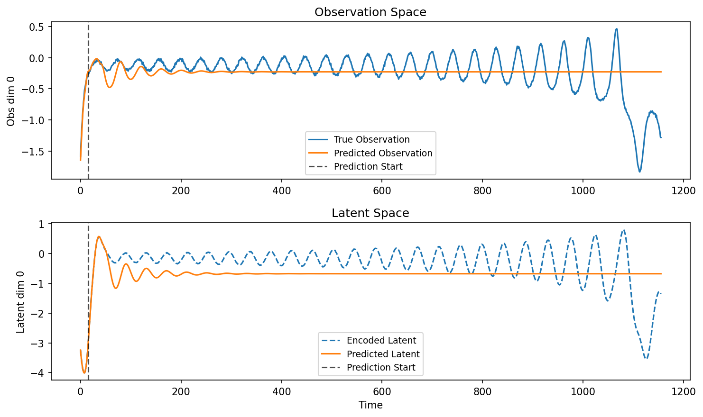
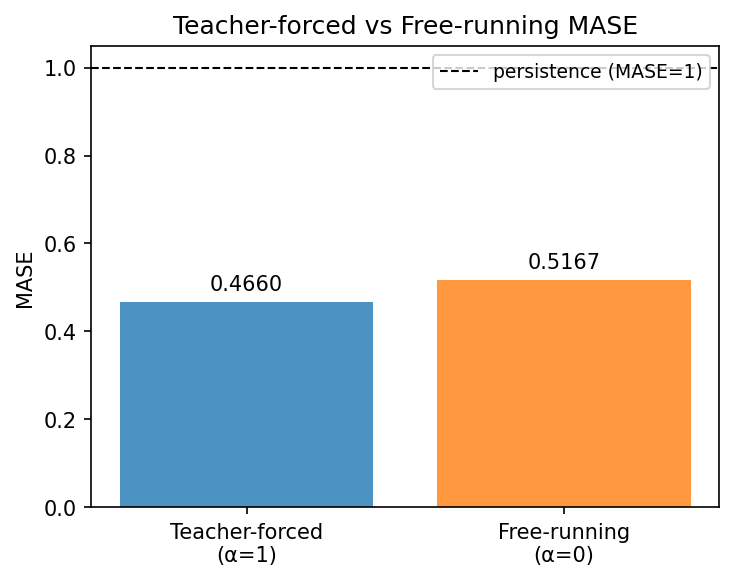
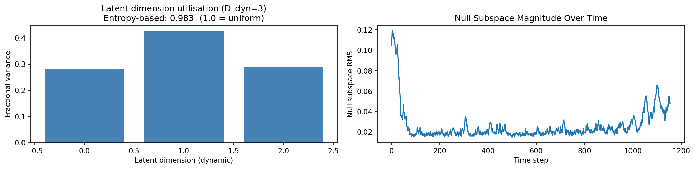
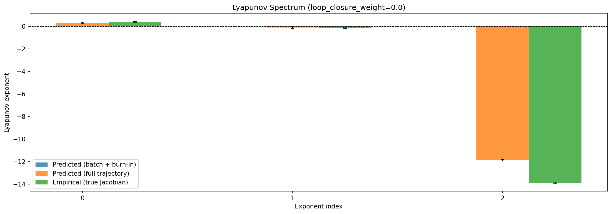
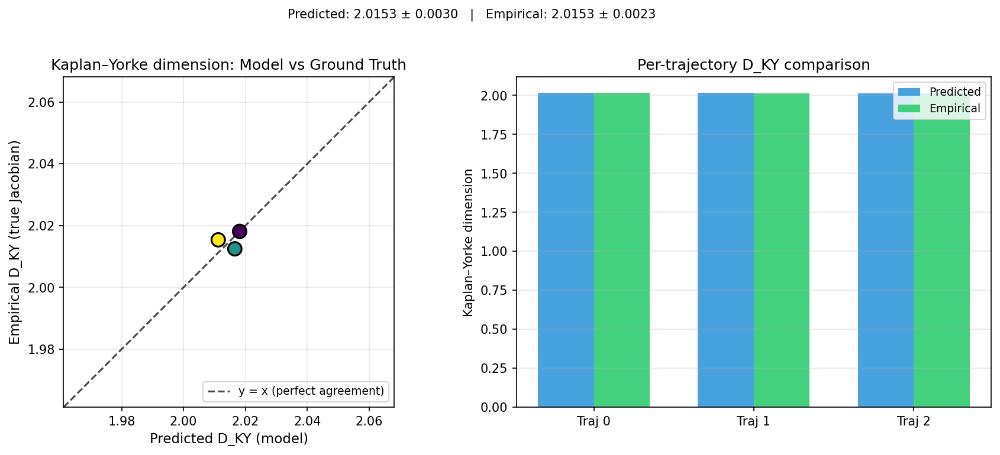
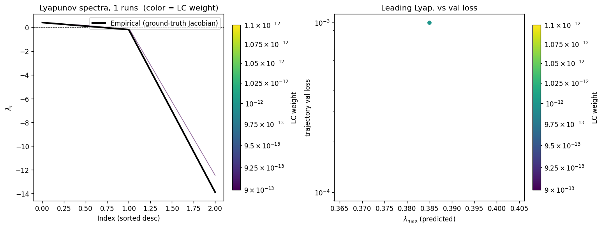
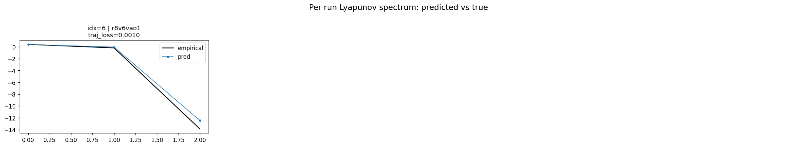
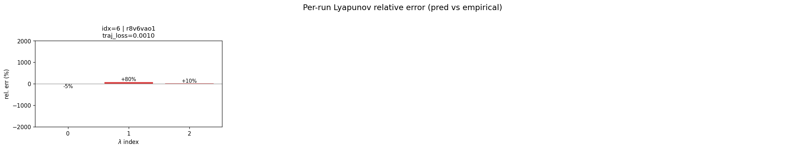
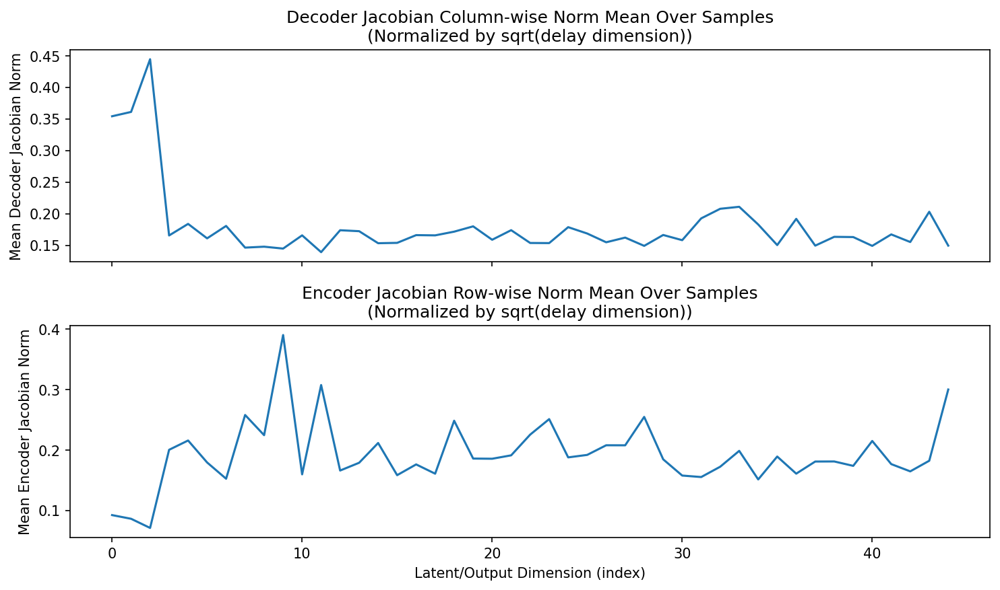
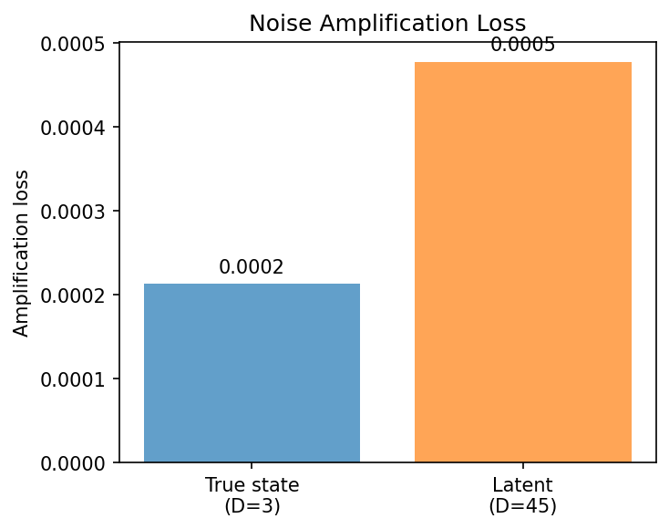
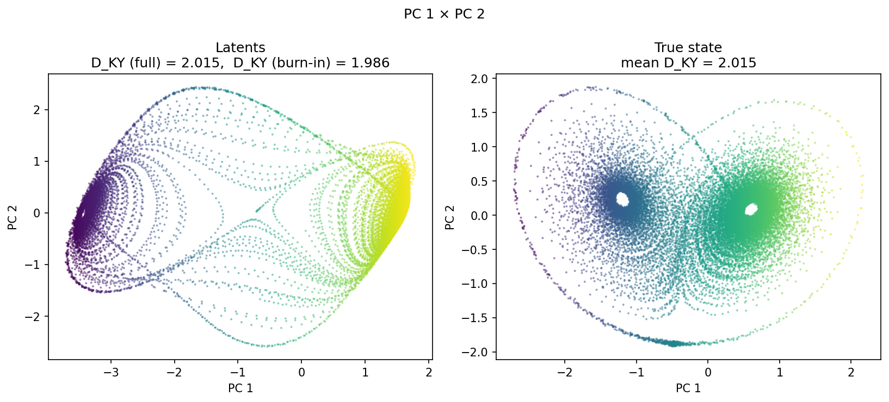
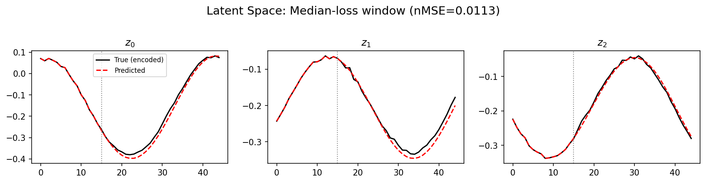
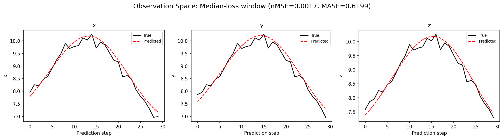
(to be written)
run_analytics stdoutrun_analyticsNo run_id provided — selecting best run from group 'lorenz_partial_additive_mse_uniform_p30_obsnoise001__ndelays_sweep' ...
Found 10 total runs in JacobianODE/Lorenz_INDpartial_NDsweep_D1_NormTrue__JacobianODE (group=lorenz_partial_additive_mse_uniform_p30_obsnoise001__ndelays_sweep)
All runs (state, loop_closure_weight, tangent_entropy_weight, kl_dyn_weight):
r8v6vao1: state=finished, lc=0.0, te=0.0, kl_dyn=0.0
wy6ex26e: state=finished, lc=0.0, te=0.0, kl_dyn=0.0
0zkh7nui: state=finished, lc=0.0, te=0.0, kl_dyn=0.0
2eyziq6e: state=finished, lc=0.0, te=0.0, kl_dyn=0.0
mt362mfq: state=finished, lc=0.0, te=0.0, kl_dyn=0.0
yss0ka8u: state=finished, lc=0.0, te=0.0, kl_dyn=0.0
zvldwae9: state=finished, lc=0.0, te=0.0, kl_dyn=0.0
ahkte45j: state=finished, lc=0.0, te=0.0, kl_dyn=0.0
b2mixsm8: state=finished, lc=0.0, te=0.0, kl_dyn=0.0
htrnbil4: state=finished, lc=0.0, te=0.0, kl_dyn=0.0
slurm_timeout_min not found in any run config — falling back to 180 min
Including r8v6vao1 (lc=0.0): use_all_runs=True (state=finished)
Including wy6ex26e (lc=0.0): use_all_runs=True (state=finished)
Including 0zkh7nui (lc=0.0): use_all_runs=True (state=finished)
Including 2eyziq6e (lc=0.0): use_all_runs=True (state=finished)
Including mt362mfq (lc=0.0): use_all_runs=True (state=finished)
Including yss0ka8u (lc=0.0): use_all_runs=True (state=finished)
Including zvldwae9 (lc=0.0): use_all_runs=True (state=finished)
Including ahkte45j (lc=0.0): use_all_runs=True (state=finished)
Including b2mixsm8 (lc=0.0): use_all_runs=True (state=finished)
Including htrnbil4 (lc=0.0): use_all_runs=True (state=finished)
Found 10 effectively-done sweep runs:
loop_closure_weight=0.0, tangent_entropy_weight=0.0, kl_dyn_weight=0.0 -> run_id=0zkh7nui
loop_closure_weight=0.0, tangent_entropy_weight=0.0, kl_dyn_weight=0.0 -> run_id=2eyziq6e
loop_closure_weight=0.0, tangent_entropy_weight=0.0, kl_dyn_weight=0.0 -> run_id=ahkte45j
loop_closure_weight=0.0, tangent_entropy_weight=0.0, kl_dyn_weight=0.0 -> run_id=b2mixsm8
loop_closure_weight=0.0, tangent_entropy_weight=0.0, kl_dyn_weight=0.0 -> run_id=htrnbil4
loop_closure_weight=0.0, tangent_entropy_weight=0.0, kl_dyn_weight=0.0 -> run_id=mt362mfq
loop_closure_weight=0.0, tangent_entropy_weight=0.0, kl_dyn_weight=0.0 -> run_id=r8v6vao1
loop_closure_weight=0.0, tangent_entropy_weight=0.0, kl_dyn_weight=0.0 -> run_id=wy6ex26e
loop_closure_weight=0.0, tangent_entropy_weight=0.0, kl_dyn_weight=0.0 -> run_id=yss0ka8u
loop_closure_weight=0.0, tangent_entropy_weight=0.0, kl_dyn_weight=0.0 -> run_id=zvldwae9
n_dims=20, n_latent=20, n_dyn=3, dt=0.0150
run=0zkh7nui: DiagnosticMetrics(one_step_mase=0.36341559886932373, loop_closure_loss=0.22793477773666382, fast_eigenvalue_fraction=0.0, trajectory_val_loss=0.002425663871690631) (from W&B history)
run=2eyziq6e: DiagnosticMetrics(one_step_mase=5.992181301116943, loop_closure_loss=0.23063239455223083, fast_eigenvalue_fraction=0.0, trajectory_val_loss=1.0985738039016724) (from W&B history)
run=ahkte45j: DiagnosticMetrics(one_step_mase=0.372988760471344, loop_closure_loss=0.05247814953327179, fast_eigenvalue_fraction=0.0, trajectory_val_loss=0.014231435023248196) (from W&B history)
run=b2mixsm8: DiagnosticMetrics(one_step_mase=0.3721044957637787, loop_closure_loss=0.41198310256004333, fast_eigenvalue_fraction=0.0, trajectory_val_loss=0.0015149586834013462) (from W&B history)
run=htrnbil4: DiagnosticMetrics(one_step_mase=0.4618355631828308, loop_closure_loss=2.895845890045166, fast_eigenvalue_fraction=0.0, trajectory_val_loss=0.00043698959052562714) (from W&B history)
run=mt362mfq: DiagnosticMetrics(one_step_mase=0.4269067347049713, loop_closure_loss=1.1016403436660767, fast_eigenvalue_fraction=0.0, trajectory_val_loss=0.0006842044531367719) (from W&B history)
run=r8v6vao1: DiagnosticMetrics(one_step_mase=0.41434019804000854, loop_closure_loss=1.660424828529358, fast_eigenvalue_fraction=0.0, trajectory_val_loss=0.0007737129344604909) (from W&B history)
run=wy6ex26e: DiagnosticMetrics(one_step_mase=1.064403772354126, loop_closure_loss=5.3353190422058105, fast_eigenvalue_fraction=0.0, trajectory_val_loss=0.014089317061007023) (from W&B history)
run=yss0ka8u: DiagnosticMetrics(one_step_mase=0.35876113176345825, loop_closure_loss=0.03453351557254791, fast_eigenvalue_fraction=0.0, trajectory_val_loss=0.0074974549934268) (from W&B history)
run=zvldwae9: DiagnosticMetrics(one_step_mase=0.3496623933315277, loop_closure_loss=0.11502780765295029, fast_eigenvalue_fraction=0.0, trajectory_val_loss=0.004368781577795744) (from W&B history)
Ranking method: best_traj_loss
Best run ID: htrnbil4
Best loop_closure_weight: 0.0
Best tangent_entropy_weight: 0.0
Best kl_dyn_weight: 0.0
Best traj loss: 0.000437
Criteria applied: ['C1', 'C2', 'C3']
Surviving: 8 / 10
Auto-selected run_id: htrnbil4
======================================================================
PARETO FRONTIER RUNS (6 runs)
======================================================================
Run ID LC Loss Traj Val Loss
------------ -------------- --------------
yss0ka8u 0.034534 0.007497
zvldwae9 0.115028 0.004369
0zkh7nui 0.227935 0.002426
b2mixsm8 0.411983 0.001515
mt362mfq 1.101640 0.000684
htrnbil4 2.895846 0.000437 <-- selected
======================================================================
RANKING METHOD COMPARISON (over 8 survivors)
======================================================================
Method Run ID LC Loss Traj Val Loss
---------------------- ------------ -------------- --------------
best_traj_loss htrnbil4 2.895846 0.000437 <-- active
pareto_knee zvldwae9 0.115028 0.004369
geo_rank yss0ka8u 0.034534 0.007497
minimax_rank 0zkh7nui 0.227935 0.002426
geo_log_score htrnbil4 2.895846 0.000437
minimax_log_score 0zkh7nui 0.227935 0.002426
======================================================================
Loading run htrnbil4 from JacobianODE/Lorenz_INDpartial_NDsweep_D1_NormTrue__JacobianODE ...
Train dataset shape: torch.Size([24442, 45, 45])
Validation dataset shape: torch.Size([7777, 45, 45])
Test dataset shape: torch.Size([3333, 45, 45])
Train trajectories dataset shape: torch.Size([22, 1156, 45])
Validation trajectories dataset shape: torch.Size([7, 1156, 45])
Test trajectories dataset shape: torch.Size([3, 1156, 45])
Loading checkpoint epoch=119-step=24000.ckpt...
Computing reconstruction ...
Computing MASE ...
Teacher-forced MASE: 0.4660
Free-running MASE: 0.5167
Computing latent utilization ...
Entropy-based utilization: 0.983
Null subspace mean RMS: 3.065358e-02
Computing Lyapunov exponents ...
Computing full-trajectory Lyapunov (3 test trajs, T=1156) ...
Predicted Lyapunov exponents (batch+burn-in, 128 windowed trajs):
λ_1 = +nan ± nan
λ_2 = +nan ± nan
λ_3 = +nan ± nan
Predicted Lyapunov exponents (full-length, 3 test trajs):
λ_1 = +0.2957 ± 0.0658
λ_2 = -0.1135 ± 0.1030
λ_3 = -11.8841 ± 0.0653
Empirical Lyapunov exponents (mean ± std):
λ_1 = +0.3846 ± 0.0251
λ_2 = -0.1716 ± 0.0444
λ_3 = -13.8799 ± 0.0398
Mean KY dim (predicted): 2.015 ± 0.003
Mean KY dim (empirical): 2.015 ± 0.002
Mean KY dim (burn-in): 1.986 ± 0.309
Computing prediction windows ...
Windows: 114 — nMSE min=0.0010, median=0.0017, mean=0.0025, max=0.0130
Computing long trajectory prediction ...
Computing encoder/decoder Jacobians ...
encoder_jacobian: (128, 45, 45)
decoder_jacobian: (128, 45, 45)
Computing amplification loss ...
Amplification loss — True state: 0.000213
Amplification loss — Latent: 0.000478